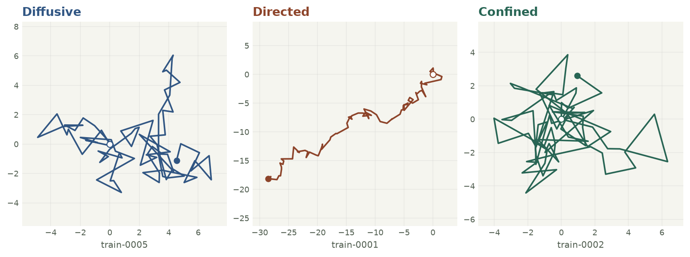

Three tracks, three kinds of motion

The simulator makes 900 labeled training tracks and 300 separate test tracks. For each motion type, it includes short and long recordings with either low or high observation noise. All tracks come from equations in the repository; the CC0 dataset license covers commercial reuse.
How the solution is judged
The agent submits one row per test track: its ID and one of three labels. The grader rejects missing, repeated, or unexpected IDs. It reports seven checks: valid submission, overall score, recall for each of the three motion types, and separate scores for short and noisy tracks.
The notebook compares how far a particle moves over different time intervals, how often consecutive steps line up, and how stretched out its path is. It uses those measurements to train a classifier. The test answer key stays with the evaluator.
Macro F1 gives each motion type equal weight. The most difficult class was random wandering: the model recognized 83 of 100 diffusive tracks, compared with 90 of 100 directed tracks and 95 of 100 confined tracks. These results measure performance on simulated data only.
Reproduce the result
From the repository in a Python 3.10 environment on Linux:
python -m pip install -c constraints-linux.txt . && python run.pyTwo clean runs on GitHub-hosted Ubuntu produced identical data, predictions and grade reports. For a blind test, the evaluator can choose a private seed that changes only the test set and give the agent only its input files.
Inspect the successful Linux run ↗ · Read the seven-check JSON report →
This benchmark grew out of my earlier particle-tracking work. The new example uses its own simulator and does not redistribute experimental microscopy records.